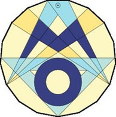

Auch am morgigen Freitag, dem 06. Dezember, 2013 fällt der Unterricht wegen des Orkans Xaver aus. Weitere und ständig aktualisierte Informationen erhalten Sie vom Bildungsministerium Schleswig-Holstein oder unter 0800 18 27 27 1.
Der Unterricht fällt am morgigen Donnerstag, dem 05. Dezember, wegen des zu erwartenden Orkans aus. Weitere und ständig aktualisierte Informationen erhalten Sie vom Bildungsministerium Schleswig-Holstein oder unter 0800 18 27 27 1.
Die Klasse 6b belegte beim Ferienclub 2013 mit einer Gesamtzahl von 147 Büchern den dritten Platz in Schleswig-Holstein. Der Arena-Verlag belohnte dieses Leseengagement mit einer Bücherkiste im Werte von 150 €, die begeistert in Empfang genommen wurde.
SchülerInnen der sechsten Klassen nahmen im Mai 2013 im Rahmen des Biologieunterrichts in den letzten Jahren am Juniorcampus der FH Lübeck teil. Die SchülerInnen haben auf dem Campus die Möglichkeit, in Experimenten selbst gewählte Nahrungsmittel auf ihre Nahrungsbestandteile zu untersuchen. Die Ergebnisse werden festgehalten und im Unterricht vertieft.
32 SchülerInnen von vier Gymnasien hatten das große Glück, an einer Studienfahrt nach Israel und Palästina vom 26.09. bis zum 08.10.2013 teilzunehmen. Alle Mitfahrenden sind mit vielfältigen Eindrücken, Begeisterung und Nachdenklichkeit nach Hause gekommen.
Die Eindrücke waren so vielfältig wie das kleine Land. Wir durchfuhren verschiedene Klimazonen, von der Wüste bis zum fruchtbaren Gebiet um den See Genezareth. Wir erlebten verschiedene Religionen, von der Sabbatfeier bei den liberalen Juden in Tel Aviv und bei dem Besuch bei den Ultraorthodoxen in Mea Schearim. Wir gingen durch die Via Dolorosa der Christen und bestaunten den Felsendom der Muslime. Wir begegneten unterschiedlichen Menschen, dem Franziskanermönch in Kapernaum, muslimischen Händlern im Basar und bewaffneten jungen Israelis in der Altstadt von Jerusalem und wir trafen Personen, die in Israel leben: von Schülerinnen und Schülern der Schmidtschule bis zu Herrn Alroi-Arloser, der uns die wirtschaftlichen Beziehungen zwischen Israel und Deutschland in der Außenhandelskammer in Tel Aviv erläuterte.
Große Begeisterung gab es immer dann, wenn Wasser auftauchte, der warme See Genezareth, die warmen Quellen in Sachne, in denen kleine Fische uns die Hautschuppen abknabberten, das Tote Meer mit seinen natürlichen Schlammkuhlen, in denen sich die Schülerinnen und Schüler mit Schlamm einrieben, und schließlich das Mittelmeer. Begeistert sahen wir von unseren Unterkünften auf die Altstadt von Jerusalem und den nächtlichen glitzernden See Genezareth, begeistert aßen wir in Gruppen in israelischen Familien.
Mit nachdenklichen und engagierten Fragen verfolgten wir die zahlreichen Vorträge. Nachdenklich machten der Besuch von Yad Va Schem und die Begegnung mit Schlomo Samson, einem Überlebenden von Bergen- Belsen. Nachdenklich machten auch die Checkpoints, die Mauer und die Siedlungen. Mit Bewunderung folgten wir deshalb den Ausführungen der Friedensinitiative „Parents Circle“, die versucht, die Haltung des sich voneinander Abschottens zu überwinden.
Nach dem Ende der Reise ist allen klar geworden, dass die Beschäftigung mit dieser Fahrt noch lange nicht zu Ende ist.
Fest steht, dass die Fahrt für alle Beteiligten ein Höhepunkt der Schulzeit war.
Endlich ist es soweit! Der T-Shirt-Verkauf startet am 2. Dezember.
Wir möchten uns für die Verzögerung entschuldigen. Leider hat sich herausgestellt, dass die Qualität der ursprünglich ausgewählten T-Shirts nicht unseren Anforderungen entsprach. Wir mussten deswegen kurzfristig einen neuen Anbieter suchen.
Eure Bestellungen könnt ihr vom 02.12. bis zum 06.12. in der LN-Lounge ausfüllen und abgeben. Zusätzlich ist die Bestellung auf dem Adventsbasar am SV-Stand möglich. Die Bestellformulare liegen vor dem Sekretariat aus. Farbmuster zur Ansicht sind vorhanden.
Demnächst, ab dem 26. November, beginnt am Leibniz-Gymnasium eine Vortragsreihe zu pädagogischen und psychologischen Themen. Eine Voranmeldung ist erforderlich. Näheres hierzu lesen Sie bitte in dem Schreiben von Hr. Werner und Fr. von der Heyde.
83 SchülerInnen aus dem Landkreis Ostholstein haben sich am 14.11.2013 beim mathematischen Wettbewerb in Eutin gemessen. Die SchülerInnen konnten hierbei die Erfahrung machen, dass Mathematik mehr als Addition, Multiplikation und Prozentrechnung ist. Zwölf SchülerInnen des Leibniz- Gymnasiums wagten sich an die kniffligen Knobelaufgaben. In den unteren Klassenstufen war die Beteiligung hoch und somit sind wir stolz, dass wir so tolle Ergebnisse erzielen konnten. Wir gratulieren folgenden SchülerInnen:
Klasse 5:
1. Platz Paula Altmann
3. Platz Jon Henry Nett
Klasse 6:
2. Platz Hendrik Hohendahl
2. Platz Jonah Brunner
Klasse 9:
2. Platz Nico Hyttrek
Klasse 12:
1. Platz Sabrina Thiessen
Als Belohnung bekamen die SchülerInnen Buchgutscheine und die Besten eines jeden Jahrgangs werden an der Landesrunde, die am 21./22.2.2014 in Lübeck stattfindet, teilnehmen.
Es ist endlich wieder soweit: EGMUN 2013 ist eröffnet und wir haben nun fünf Tage Zeit, um aus der Welt einen besseren Ort zu machen. Mit Schülern und Schülerinnen aus neun verschiedenen Ländern aus drei Kontinenten simulieren wir die Arbeit der Vereinten Nationen. Nach Monaten der inhaltlichen Vorbereitung können wir nun endlich debattieren und um jede einzelne Formulierung für eine möglichst starke Resolution kämpfen. Dabei geht es um die Syrienkrise, um die Situation im Kongo, Stärkung von Frauenrechten und die Möglichkeiten, den Drogenhandel einzudämmen - insgesamt mehr als 40 Themen, die nach einer Lösung verlangen. Mehr davon nach unserer Rückkehr.